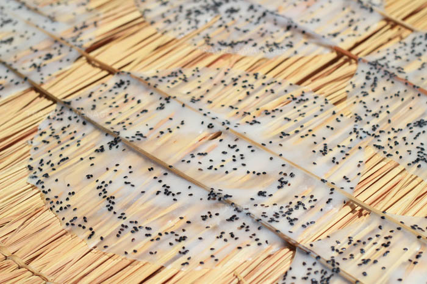

ข้าวเกรียบ
มีส่วนผสมของแป้งข้าวเจ้า ใส่งา แล้วละเลงลงบนผ้าขาวบางที่ขึงอยู่บนปากหม้อที่มีน้ำเดือด เมื่อแป้งสุกแล้วก็แซะขึ้นมา นำมาตากแดดจนแห้ง
มีส่วนผสมของแป้งข้าวเจ้า ใส่งา แล้วละเลงลงบนผ้าขาวบางที่ขึงอยู่บนปากหม้อที่มีน้ำเดือด เมื่อแป้งสุกแล้วก็แซะขึ้นมา นำมาตากแดดจนแห้ง
มีส่วนผสมของมะพร้าวแก่ขูดเป็นเส้นๆ ถั่วลิสง น้ำตาลทราย เกลือ กระเทียม ขิง ทั้งหมดผสมกันแล้วนำลงไปทอดในน้ำมันร้อนๆ
ต้มข้าวต้มโดยผสมข้าวเจ้ากับข้าวเหนียวลงไป ต้มจนเมล็ดข้าวนุ่ม แล้วปล่อยทิ้งไว้ให้เย็นตัวลงเล้กน้อยค่อยใส่ใบเตยลงไปเพิ่มความหอม